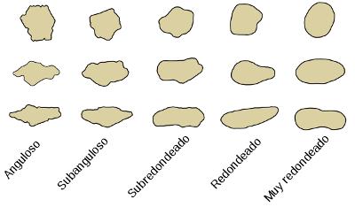
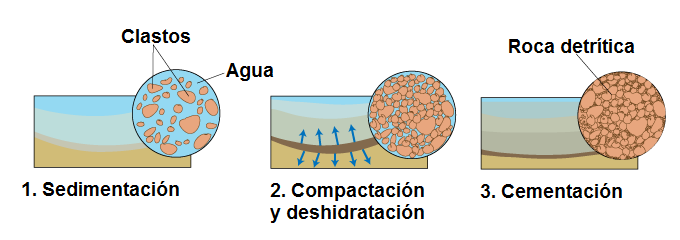
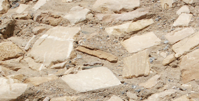
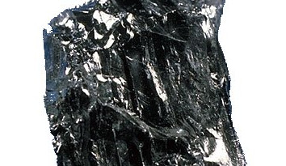
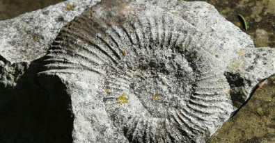
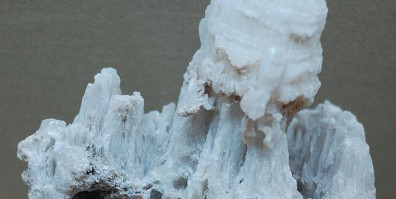

Minerales y rocas
La mayor parte de los sólidos que forman la Tierra son de tipo cristalino, esto quiere decir que su estructura elemental, las moléculas que lo forman, se distribuyen de forma ordenada.
A los sólidos cristalinos de origen natural se les denomina minerales, por tanto, la Tierra está compuesta en su mayor parte por minerales.
Por otra parte, los minerales no suelen encontrarse aislados en la naturaleza sino que se agrupan formando unidades mayores: las rocas. Por lo tanto, una roca es un agregado de minerales.
Rocas sedimentarias
El resultado de la erosión es la formación de fragmentos de roca de diferentes tamaños, desde grandes bloques hasta polvo, llamados detritus o clastos.
 |
Tras los fenómenos de transporte y sedimentación, los clastos quedan depositados en las cuencas sedimentarias, como vimos en el apartado anterior.
Los sedimentos se van acumulando en capas horizontales y diferenciadas, que se llaman estratos. Los estratos más modernos se depositan sobre los depositados antes, más antiguos.
La acumulación de sedimentos alcanza, en muchos lugares de la Tierra, espesores de varios kilómetros. A medida que se acumulan sedimentos, su propio peso hace que la presión sobre los estratos más bajos vaya aumentando.
Con este aumento de presión los sedimentos, que son materiales blandos, en rocas, que reciben el nombre de rocas sedimentarias.
Rocas sedimentarias
Las rocas sedimentarias son las que se forman a partir del material acumulado en las cuencas sedimentarias.
Tipos de rocas sedimentarias
Se distinguen varios tipos de rocas sedimentarias
1. Rocas detríticas.
Son rocas formadas por fragmentos que provienen de la erosión de otras rocas. El proceso que hace que los sedimentos se transforman en rocas sigue los siguientes pasos:
 |
-
Compactación: los clastos que forman el sedimento se comprimen y los huecos que hay entre ellos se hacen más pequeños.
-
Deshidratación: al mismo tiempo, el agua que hay en los huecos que quedan entre los clastos es expulsada.
-
Cementación: los huecos que aún queden se rellenan con minerales que estaban disueltos en el agua.
Ejemplos de estas rocas son las areniscas, las arcillas o las brechas.
|
 Brecha |
2. Rocas orgánicas
Si algún estrato de sedimento contiene gran cantidad de restos vegetales, las rocas que se forman a partir de él también son sedimentarias y se les llama rocas orgánicas. Un ejemplo son los carbones, como la antracita.
 |
| Antracita |
3. Rocas calizas
Son las que contienen el mineral carbonato cálcico. Un ejemplo de éstas son las que se forman de estratos en los que se da una acumulación de restos de conchas, esqueletos o caparazones de animales marinos: rocas calizas orgánicas.
 |
| Caliza orgánica |
4. Rocas evaporíticas
Por último, hay otro tipo de rocas sedimentarias que se forman en el mar y en algunos lagos, en los que hay disueltos enormes cantidades de minerales, como la sal común. Al evaporarse el agua, se forma un tipo muy abundante de rocas sedimentarias, las rocas sedimentarias de precipitación química o evaporíticas. Ejemplos son la sal común o los yesos.
 |
| Yeso |